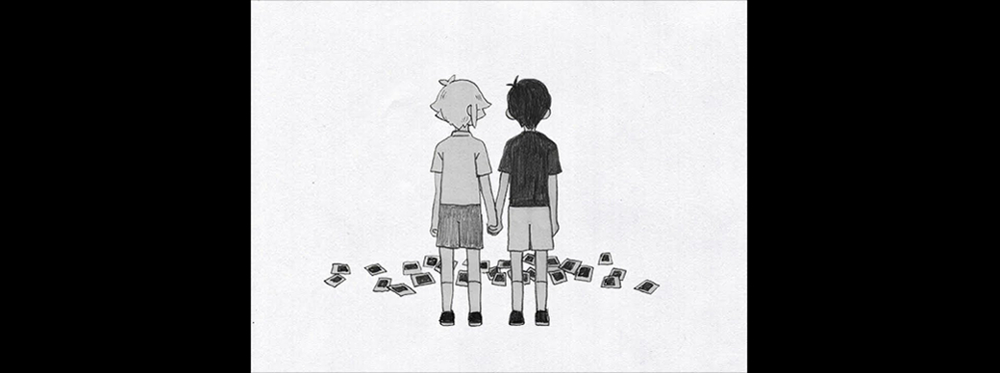

꿈속 세상(하얀 공간 ~ 바질의 집)
걱정 마...
DON'T WORRY...
모든 게 괜찮아질 테니까...
EVERYTHING IS GOING TO BE OKAY...
검은 전구가 빛나는 하얀 공간, 그곳에는 노트북과 티슈 상자, 스케치북, 그리고 흑백의 소년 오모리가 있다. 방에서 깨어난 오모리는 하얀 공간을 거닌다. 이윽고 식칼을 발견하여 집어 들자 흰색 문이 나타난다. 오모리는 흰색 문을 열어 꿈속 세상을 나선다.
문 너머로는 형형색색 이웃의 방 안에 오모리의 꿈속 친구들 오브리, 켈, 히로 사이 카드 게임을 한다. 그러던 중 오모리를 발견하자 반가이 맞으며 여느 때처럼 모험을 떠날 준비를 한다. 나무 둥지를 빠져나와 놀이터를 향하자, 오모리의 친구 바질과 누나인 마리가 돗자리를 편 채 기다리고 있었다. 바질은 친구들에게 자신의 사진첩을 보여주며 자신의 집으로 가자고 한다.
놀이터를 나가려 하자 벌리가 오모리 일행을 붙잡는다. 숨바꼭질을 하자고 계속 보채며 놓아주질 않는다. 결국 같이하기로 하고 술래를 정한다. 술래가 된 오모리는 친구들을 차례차례 찾아내어 모래장 속 모래에 숨은 벌리까지 찾아낸다. 그런데 바질은 보이지 않는다. 별안간 한 나무가 흔들리더니 그 속에서 위장한 보스가 나타난다. 바질을 인질로 잡은 채로 졸지에 오모리와 친구들과 전투 튜토리얼을 벌인다. 보스는 몸통박치기로 오브리, 켈, 히로를 토스트로 만들어버리나 오모리가 마지막 한 방을 버티어 오모리의 일격에 쓰러진다. 바질을 되찾은 오모리와 친구들은 숨바꼭질을 마치고 광대한 숲 남녘 바질의 집으로 향한다.
바질이 자신이 화단에 심은 화초를 보고 두더지새싹들과 싸우면서 오모리와 친구들은 바질의 집에 도착한다. 바질의 집에 도착하자 늘 투덕대던 켈과 오브리가 또다시 싸우기 시작하고 바질의 사진첩을 엎어버린다. 겨우 싸움이 진정되자, 오모리는 흩어진 사진들을 재배열하고 바질의 집 안으로 들어간다. 그 순간, 바질의 사진첩에서 처음 보는 흑백 사진 한 장이 떨어지고 바질이 붉은 눈을 보이며 마리를 되뇌더니 노이즈와 함께 오모리가 하얀 공간으로 복귀한다.[1] 하얀 문이 사라진 하얀 공간으로 돌아온 오모리는 식칼로 자기 자신을 찔러 꿈에서 깨어난다.
현실
여기 나온 우리들을 봐...
LOOK AT ALL OF US...
이 모든 건 우리들의 추억이야...
THESE ARE ALL OF OUR MEMORIES TOGETHER..
이제는 약간 슬픈 추억이 됐지만...
THEY'RE A LITTLE SAD NOW...
그런 추억이 있었다는 걸 행복하게 생각해야 돼...
BUT WE SHOULD BE HAPPY THAT THEY HAPPENED AT ALL...
같이 새로운 추억들을 만들어보자, 알겠지?
LET'S MAKE SOME NEW MEMORIES TOGETHER, OKAY?
어느 한 밤중, 꿈속의 오모리와 똑같은 인상의 소년이 밤중에 깨어난다. 소년의 이름은 써니로, 히키코모리 생활을 하는 소년이었다. 유선전화기에는 엄마가 보낸 수많은 음성 메시지가 쌓여 있다. 그 중 냉장고에 자신이 좋아하는 스테이크를 준비했다는 메시지를 받은 써니는 배가 고파 아래층으로 향한다.
그러나 고소공포증이 있는 써니는 계단에서 수많은 손의 환영에 쫓기며 '무언가'와 마주한다. 겁에 질린 채 '무언가'의 공격을 버티던 써니는 목소리를 따라 진정(CALM DOWN)하는 법을 익혀 끝내 높은 곳에 대한 공포증을 극복해 낸다. 써니는 전자레인지로 스테이크를 데워 먹지만 몸이 받아들이지 못하여 화장실로 가 변기에 게워내고 만다.
그때, 누군가 집 문을 두드린다. 문을 두드린 사람은 써니의 누나 마리로, 써니는 문을 열어준다. 그러나 마리는 기괴하게 뒤틀린 모습이었다. 써니는 황급히 문을 닫는다. 섬뜩한 환영을 본 써니는 다시 침대로 가 잠에 빠진다.
3일 전(THREE DAYS LEFT)
그때 당시에...
난 모든 걸 봤어...
AT THAT TIME...
I SAW EVERYTHING...
전에 여기 서있을 때...
WHEN YOU STOOD HERE BEFORE...
너도 그걸 봤었니?
DID YOU SEE IT TOO?
네 뒤의... 무언가...
SOMETHING...BEHIND YOU...
잠에서 깨어난 써니는 아침부터 누군가 문을 두드리는 소리에 문 앞으로 간다. 문 앞의 사람은 자신의 옛 친구들 중 한 명인 켈이었으며, 써니가 문을 열지 안 열지 분기점이 나온다.
꿈속 세상(하얀 공간 ~ 진실)
